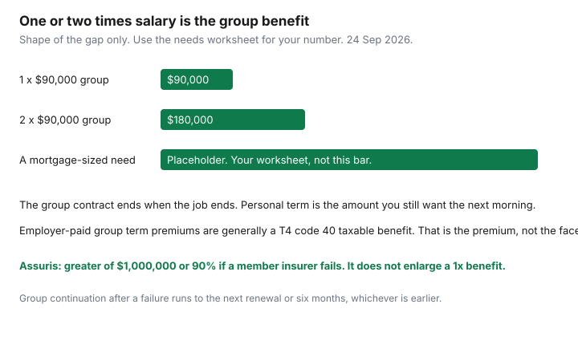

Insurance · Canada
Workplace Group Life vs Personal Term in Canada: Why 1–2× Salary Is Rarely Enough
One or two times salary on a group plan is what many Canadian employers provide. It ends when the job ends, the employer owns the contract, and the premium the employer pays is generally a taxable benefit on the T4. Families discover the gap at a layoff, or at a death, when the mortgage is still the mortgage. This page is how to read the group benefit, when to convert, and how to put a personal term policy under it without buying riders you do not need. How much insurance the household needs, and term versus whole life, are already written. They are linked. They are not redone.
Disclosure: Term life quote portals are an offer type. Saving Optimizer may earn a commission if partner links are added later. We do not currently claim a life-insurer partnership. We do not rank policies. Tax notes follow the Canada Revenue Agency premiums page as read 24 Sep 2026 and are not a filing position. Education only.
Key takeaways
- A typical group benefit of one or two times salary is employer-owned and ends when you leave. It is not sized to a mortgage plus years of income.
- Conversion and portability are booklet privileges with a short deadline and, usually, a much higher price. Do not assume you can convert to cheap 20-year term.
- Buy personal term for the gap while you are healthy and still employed. Keep the group plan until the personal policy is in force. Skip riders the needs sheet does not ask for.
- Employer-paid group term life premiums are a taxable benefit, generally reported with code 40 on the T4. The death benefit itself is a different tax question.
- Assuris death-benefit protection at a member insurer is the greater of $1,000,000 or 90%, for group and individual. It is not a reason to stay at one times salary.
Decode typical group life: 1–2× salary, employer-owned, ends when you leave
Pull the benefits booklet, not the offer letter. You are looking for three sentences.
- The multiple. Often one times salary, sometimes two, sometimes a flat amount such as $25,000. “Salary” may mean base pay on a set date and may exclude bonus. A person earning $90,000 with a one-times benefit has $90,000 of group life. A household with a $400,000 mortgage and several years of income to replace is not finished. The arithmetic belongs on the needs worksheet, which starts from the income gap and the years, not from a slogan of ten times salary.
- Who owns it. The contract is between the insurer and the employer, union, or association. You are a certificate holder. The employer can change the multiple at renewal. You cannot take the group rate to a new job.
- When it ends. Usually when employment ends, sometimes at retirement, sometimes at a stated age such as 65 or 70, and sometimes only while you are actively at work. A leave, a strike, or reduced hours can pause it. Read those lines before a parental leave or a sabbatical.

Dependent life on the same booklet, if it exists, is usually a small flat amount on a spouse or child. It is not a substitute for insurance on the parent who earns the income. Retiree life, if the plan offers it, is often a reduced flat amount. Write that figure down while you are still working, and do not assume it equals the employee multiple.
Portability and conversion options—and their usual cost shock
When you leave, two words get used as if they were the same. They are not.
| Word | What it usually means | The shock |
|---|---|---|
| Conversion | A right, for a stated number of days after coverage ends, to buy an individual policy from that insurer without new medical evidence, up to the group amount or a capped amount. | The product on offer is often permanent insurance or a short term, priced at attained age, not the payroll deduction you were used to. Get the quote before the window closes. A missed window does not reopen because you were busy. |
| Portability | Some plans let you continue a slice of group coverage by paying the premium yourself, sometimes only if you are under a stated age and you apply within the deadline. | Many plans have no port. “You can take it with you” in a farewell meeting is not a port. Ask for the form. If there is no form, there is no port. |
Conversion is a backstop if you cannot qualify medically for new insurance. It is a poor default if you are healthy, because a personally shopped term policy is usually the contract you actually wanted: a level premium for 10, 20, or 30 years, sized to the needs sheet. The term-versus-whole-life guide is the product decision. Do not let a conversion illustration become an accidental whole-life purchase unless the needs sheet says the need is permanent.
Stack personal term under the group benefit without double-paying for fluff riders
Personal term sits underneath the group benefit. It does not have to duplicate it, and it should not arrive with a handful of riders that were on the quote by default.
- Complete the needs worksheet. Subtract the group multiple you can count on while you expect to stay in this job, and also run the sheet as if the group benefit were zero, because a layoff makes it zero.
- The personal face amount is the gap you still want covered on the morning after a resignation, not the entire need plus the group amount. If the need is $700,000 and the group plan is $90,000, a personal policy around the difference is the stack. Overlap during employment is fine. You are not “double insured” in a wasteful way if the total matches the need. You are double insured in a wasteful way if you buy the full need personally and also treat the group plan as essential, and then add return-of-premium, a child rider you do not need, and a waiver you did not price.
- Waiver of premium on the personal policy is worth pricing, not worth accepting blindly. It is a disability benefit attached to a life policy. Compare it with the disability guide. A waiver that costs a lot and pays only the life premium is not income replacement.
- Tell the life underwriter about the group coverage. Hiding it is unnecessary for term life in a way that is different from disability (life claims do not offset group life the way LTD offsets CPP). Still disclose what the application asks. A clean file is the point.
Term quote portals are an offer type. Compare the same face amount, the same term, and the same health class. A lower premium in a worse health class is not a win if the class is wrong and the policy is rescinded.
Tax notes: employer-paid life as a taxable benefit on the T4 (verify at draft)
The death benefit and the premium are taxed differently. Do not mix them up.
The Canada Revenue Agency’s premiums page, read 24 Sep 2026, says that if an employer pays premiums for group life that is not group term life, the amount paid is a taxable benefit. For group term life, the calculation depends on how premiums are set. Where premiums are paid regularly and the rate for each person does not depend on age or gender, the benefit is the premiums for that person’s term coverage, plus sales and excise taxes other than GST/HST, plus provincial insurance premium tax the employer must pay, minus anything the employee paid. CRA’s page describes those provincial premium-tax rates in the employer calculation as 8% for Ontario, 7% for Manitoba, and 9% for Québec. The result goes on a T4 with code 40 for a current employee (box 14 as well) and on a T4A with code 119 for a former or retired employee. The $500 T4A filing threshold does not apply to that code, according to the same page. If the premium rate does depend on age or gender, the prescribed calculation in the Income Tax Regulations applies instead. That is the employer’s worksheet. Your job is to expect a taxable amount, not to invent it.
If you pay the group premium yourself for optional extra units, those units are often outside the taxable benefit to the extent you pay. Confirm on the pay stub. The taxable line is the premium, not the $90,000 of coverage. A common Canadian result is that a life-insurance death benefit paid to a named beneficiary is not included in their income. Corporate ownership, a policy transferred for value, or a benefit paid to the estate and then taxed in the estate are different files. If any of those apply, ask the person who prepares the return before you treat the cheque as tax-free. This page is not that opinion.
Job-change playbook: buy personal term while healthy, before you resign
The expensive time to buy personal term is after a diagnosis, or in the 30 days after a resignation when the only remaining door is conversion. The practical order:
- While you are employed and healthy, get the needs number and a personal term policy in force for the gap. Medical exams and nurse visits take weeks. Do not start them the week you intend to give notice.
- Do not cancel or waive the group plan to “avoid paying twice.” The group plan is cheap relative to the risk of a decline on the personal application. Drop optional employee-paid units only after you compare their price with the personal quote, and only if the personal policy is already issued.
- If you are leaving and the personal policy is not in force, ask human resources for the conversion deadline in writing on or before your last day. Apply inside it if you cannot get new coverage. A decline on a shopped term policy is exactly when conversion matters.
- At the new job, read the new multiple before you cancel anything personal. A new one-times plan does not replace a 20-year term you bought to cover the mortgage. Keep the personal policy. Let the new group plan sit on top until you redo the needs sheet.
- If you are between jobs with no group plan, the personal policy is the only coverage. That is the situation the stack was built for. Review the beneficiary the same week, and the annual review date.
Assuris applies to group and individual—still size coverage for family needs
Assuris applies to group life and to individual life at member insurers. The group-life page, read 24 Sep 2026, says that if the member company fails, group coverage continues until the earlier of the next group renewal or six months from the failure, and that you retain the greater of $1,000,000 or 90% of the death benefit. The same greater-of test is the individual death-benefit protection on Assuris’s main “how am I protected” page. Two consequences follow.
- A group benefit of one times a $90,000 salary is fully inside the $1,000,000 Assuris floor. Assuris does not add coverage you never bought. It protects a percentage of what the contract promised, if the insurer fails.
- A personal policy and a group policy at two different member insurers are protected separately. That is not a reason to split coverage into tiny pieces. It is a reason to know which company issued each contract. A policy that is not from an Assuris member, including some creditor mortgage life sold by a lender, is outside that promise. The needs guide compares personal term with creditor mortgage life. Use it before you add the lender’s policy out of habit.
Size the total for the family: years of income, debts you would not want paid from a forced sale, and any amount you deliberately choose not to insure because the survivor can carry it. Then subtract only the group multiple you are willing to pretend will still be there. For most households that subtraction is small, because one or two times salary does not survive a job change and does not clear a mortgage. Assuris keeps a failed insurer from taking the contract. It does not turn a thin multiple into a plan.
Sources & date stamps
- Canada Revenue Agency, premiums and contributions to insurance plans — group term life taxable benefit, provincial premium-tax rates cited as 8% Ontario, 7% Manitoba, 9% Québec, T4 code 40 and T4A code 119. Used 24 Sep 2026.
- Assuris, group life insurance — greater of $1,000,000 or 90%; continuation until the next renewal or six months. Used 24 Sep 2026.
- Assuris, how am I protected — the same death-benefit test for member-insurer policies; protection applies separately to individual and group. Used 24 Sep 2026.
- Financial Consumer Agency of Canada publishes consumer material on life insurance. Product choice and the needs worksheet are on the term-versus-whole and how-much guides linked above. Used 24 Sep 2026.
Frequently asked questions
Is one or two times salary enough life insurance?
It is a common group benefit, not a needs test. Compare it with the mortgage, the years of income the household would have to replace, and the group amount that disappears if you leave the job. Use the needs worksheet rather than a multiple of salary.
Can I take group life with me when I quit?
Only if the booklet has a portability option, which many do not. Conversion is more common: a short deadline to buy an individual policy without new medical evidence, usually at a much higher price. Get the form and the quote before the deadline.
Is employer-paid life insurance taxable?
The premium is generally a taxable benefit. CRA’s page describes the calculation for group term life and says to report it with code 40 on the T4 for a current employee. The death benefit paid to a named beneficiary is a separate question and is often not taxed as their income. Confirm your slip and your ownership structure.
Does Assuris cover group life?
Yes, at member insurers. You retain the greater of $1,000,000 or 90% of the death benefit if the insurer fails. Group coverage continues until the next renewal or six months, whichever is earlier. You still have to buy a benefit large enough for the family.
Is this insurance advice?
No. Education only. Term life quote portals are an offer type. We do not claim a partnership with any insurer.